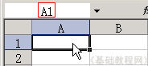

Excel 基础入门教程
统计函数 返回
有时候需要进行一些数据统计，比如算一下及格人数，各个分数段等等，下面我们来看一个练习；
1、启动Excel
1）点击“开始－所有程序－Microsoft－Microsoft Office Excel 2003”；
2）出现一个满是格子的空白窗口，这就是一张电子表格了，第一个格子看着边框要粗一些，处于选中状态；

2、Excel窗口
1）点菜单“文件－打开”命令，打开上次的“成绩表”文件；
2）在姓名的下面输入“及格数”，然后把光标移到旁边一格；
3）点一下编辑栏旁边的“fx”，在出来的函数列表里面找到“统计”，在下面找到“COUNTIF”，点“确定”按钮；
4）接下来是数据区域面板，从“78”向下拖到“68”，框选中三个人的语文成绩；
5）切换到英文输入法，在函数面板的第二个文本框中输入“>=60”，然后点“确定”，也就是60分以上算及格；
点“确定”后，单元格中出现统计结果；
6）拖动填充手柄，把旁边两格也填充上，这样就把各学科的及格人数统计好了；
本节学习了Excel中统计函数的使用方法，如果你成功地完成了练习，请继续学习下一课内容；
本教程由86团学校TeliuTe制作|著作权所有
基础教程网：http://teliute.org/
美丽的校园……
转载和引用本站内容，请保留版权信息和本站链接。